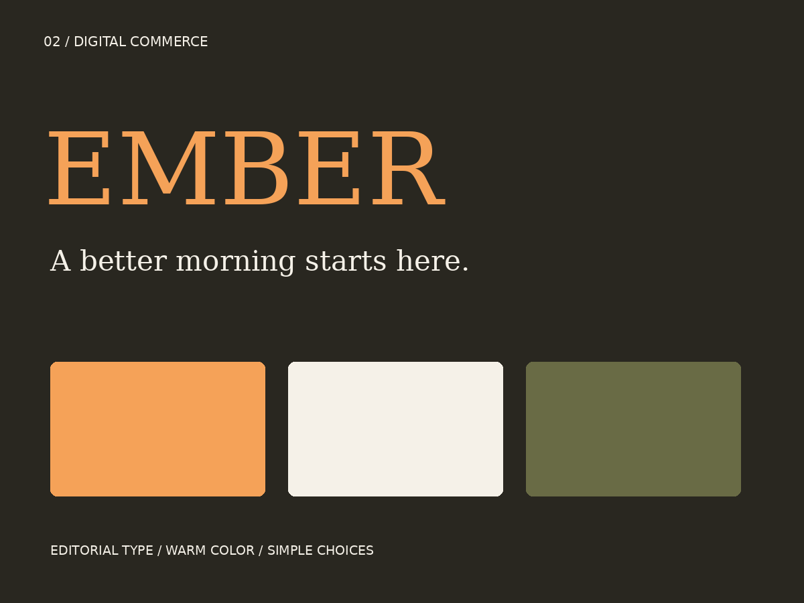
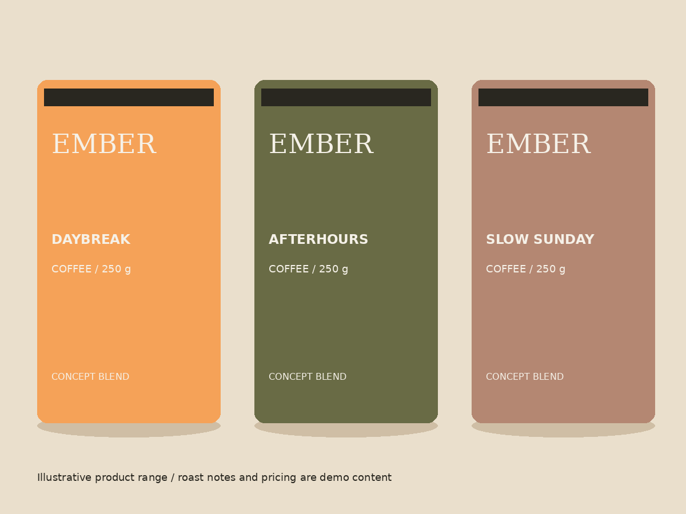

A clear entry point
A single hero action leads to the coffee range. The first screen communicates the category and the reason to explore.
An editorial coffee storefront that makes the first choice easier.
Download project source Try the storefront
Design a D2C coffee storefront that supports a quick first purchase. Clarify roast selection, show price and pack size near the action, and keep the shopping journey usable on mobile.
Home coffee drinkers comparing a small range of blends. All products, prices and tasting notes are illustrative prototype content.
A single hero action leads to the coffee range. The first screen communicates the category and the reason to explore.
Three blends expose tasting notes, roast and pack size in parallel. Details stay close to the purchase action.
Adding an item updates the bag count and an announced status message. Quantity controls and removal allow recovery from mistakes.
Semantic buttons, explicit input labels, focus outlines and a reduced-motion rule support keyboard and assistive-technology use.
Hierarchy review: the implemented prototype gives the range its own anchor and keeps the bag accessible from the hero. Mobile cards stack into a single column. A future usability test should check roast comparison and cart recovery.
Identity board, product-range illustration, responsive storefront, roast filter and functional demo cart with quantity controls. No payments, orders or customer data.


Interview five target consumers about category expectations, compare five relevant brands across shelf and mobile touchpoints, and test recognition and readability at thumbnail size. Document the findings before revising the audience hypothesis.
Use a brief → concept review → production → quality review → handoff sequence. Confirm scope and approval owners, record feedback as actionable changes, and check final assets in their actual placement context.